🍎 ¿Qué es el Sistema Digestivo?
El sistema digestivo es el conjunto de órganos encargados de transformar los alimentos que consumes en nutrientes que tu cuerpo puede absorber y utilizar. Es como una fábrica de procesamiento biológico que trabaja 24 horas al día, incluso mientras duermes.
Este sistema no solo se trata de "comer y eliminar". Es un proceso complejo que involucra digestión mecánica (masticar, mezclar) y digestión química (enzimas que descomponen moléculas), coordinado por músculos, nervios y hormonas.
🎯 Objetivos de Aprendizaje
Al finalizar este tema serás capaz de: identificar los órganos del sistema digestivo, explicar el proceso de digestión paso a paso, describir el papel de las enzimas digestivas, y comprender cómo los nutrientes son absorbidos por el cuerpo.
🗺️ Anatomía: El Mapa del Sistema Digestivo
El sistema digestivo humano mide aproximadamente 9 metros de largo si se estirara completamente. Se divide en dos grandes grupos: el tracto gastrointestinal (tubo continuo) y los órganos accesorios (glándulas que producen sustancias digestivas).
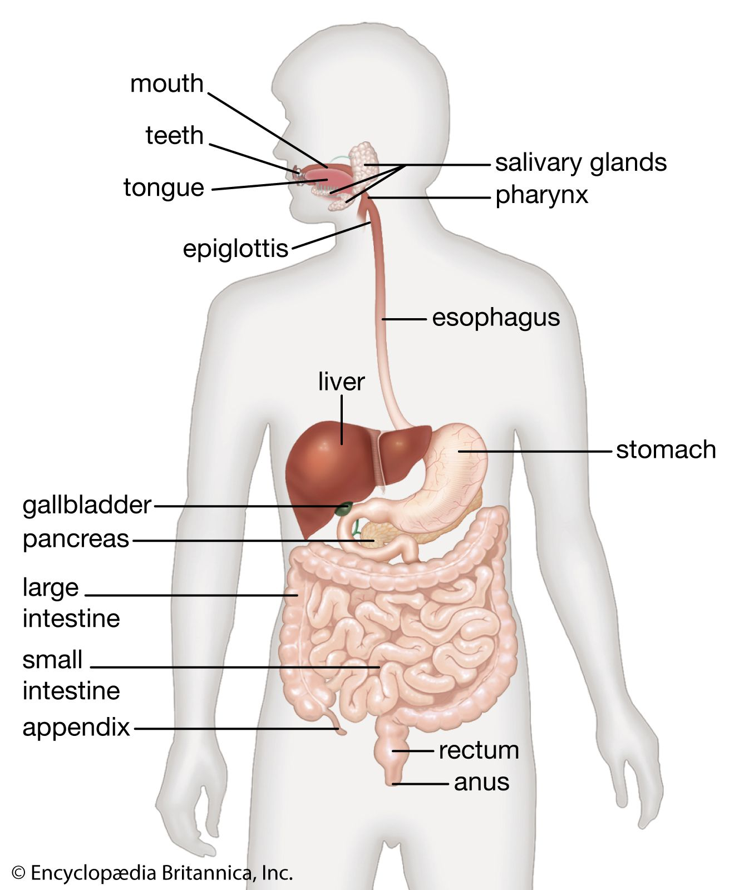
Figura 1: Vista general del sistema digestivo humano. Fuente: Encyclopædia Britannica.
📍 Tracto Gastrointestinal
- Boca: Inicio de la digestión. Dientes, lengua y glándulas salivales.
- Faringe: Cruce entre sistema digestivo y respiratorio.
- Esófago: Tubo muscular de ~25 cm que conecta boca con estómago.
- Estómago: Bolsa muscular que almacena y mezcla alimentos.
- Intestino delgado: ~6 metros. Duodeno, yeyuno e íleon.
- Intestino grueso: ~1.5 metros. Ceco, colon, recto y ano.
🔧 Órganos Accesorios
- Hígado: Mayor glándula del cuerpo. Produce bilis.
- Vesícula biliar: Almacena y concentra la bilis.
- Páncreas: Produce enzimas digestivas y hormonas (insulina).
- Glándulas salivales: Parótida, sublingual y submandibular.
- Apéndice: Pequeño saco en el ciego. Función inmunológica.
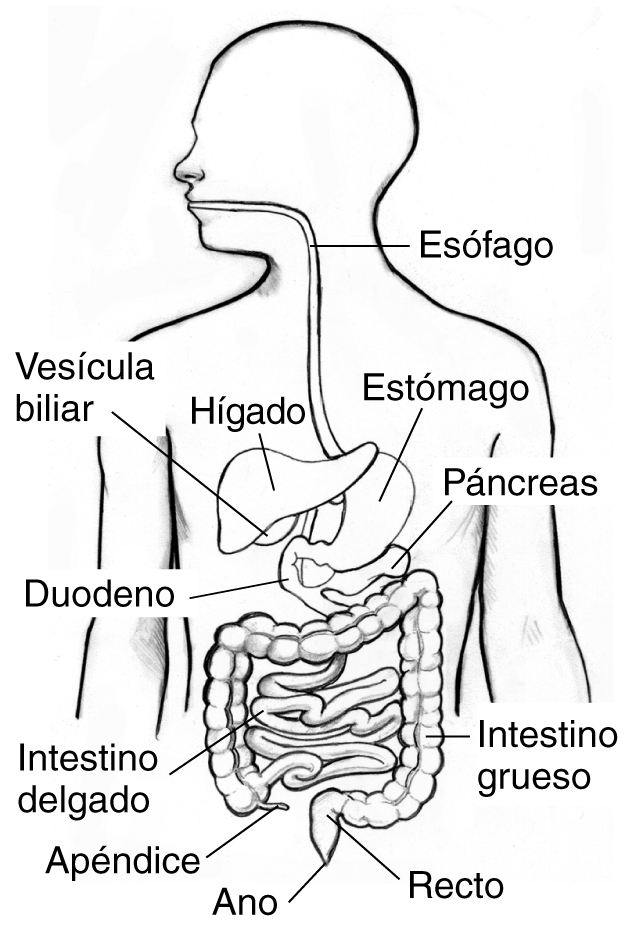
Figura 2: Sistema digestivo con nomenclatura en español. Fuente: NIDDK.
⚙️ El Proceso de Digestión: Paso a Paso
La digestión completa dura entre 24 y 72 horas dependiendo del tipo de alimento. Cada órgano tiene una función específica y se comunica con los demás mediante señales nerviosas y hormonales.
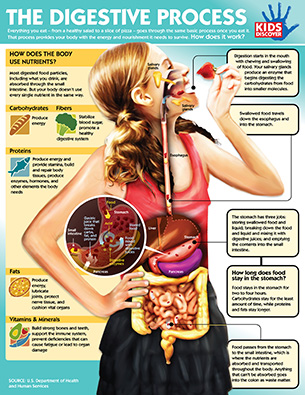
Figura 3: Infografía del proceso digestivo completo desde la ingestión hasta la absorción. Fuente: Kids Discover.
🦷 Ingestión y Masticación (Boca)
La digestión comienza en la boca. Los dientes desgarran y trituran el alimento (digestión mecánica), mientras la amilasa salival (enzima de la saliva) empieza a descomponer los carbohidratos en azúcares más simples. La lengua forma el bolo alimenticio y lo empuja hacia la faringe.
📉 Deglución y Peristalsis (Esófago)
Al tragar, la epiglotis cierra la laringe para evitar que el alimento entre a las vías respiratorias. El esófago utiliza movimientos peristálticos —contracciones ondulantes de sus músculos— para empujar el bolo hacia el estómago. Este proceso es involuntario y automático.
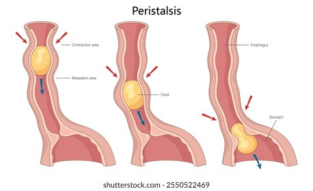
Figura 4: La peristalsis: contracciones musculares que impulsan el alimento por el esófago. Fuente: Shutterstock.
🧪 Digestión Gástrica (Estómago)
El estómago secreta jugo gástrico compuesto por ácido clorhídrico (HCl) y la enzima pepsina. El pH del estómago es de 1.5-3.5 —muy ácido— lo que desnaturaliza las proteínas y las descompone en péptidos. El estómago también mezcla el alimento con movimientos de amasamiento, convirtiéndolo en quimo.
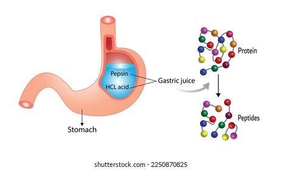
Figura 5: La pepsina, activada por el ácido clorhídrico, descompone las proteínas en péptidos. Fuente: Shutterstock.
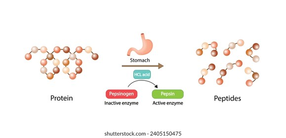
Figura 6: El pepsinógeno (enzima inactiva) se convierte en pepsina activa por acción del HCl. Fuente: Shutterstock.
¿Sabías que...?
El estómago puede expandirse hasta 4 litros de capacidad. Además, se regenera completamente cada 3-4 días gracias a que su mucosa produce constantemente nuevas células para protegerse de su propio ácido.
🔬 Digestión Intestinal (Intestino Delgado)
El intestino delgado es donde ocurre la mayor parte de la digestión y absorción. El páncreas vierte enzimas (amilasa, lipasa, proteasas) y el hígado aporta bilis (almacenada en la vesícula biliar) que emulsifica las grasas. El quimo se descompone en nutrientes simples: glucosa, aminoácidos, ácidos grasos y glicerol.
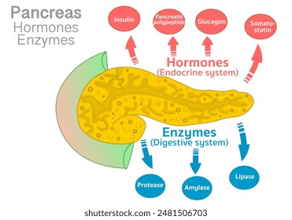
Figura 7: El páncreas produce enzimas digestivas (amilasa, lipasa, proteasa) y hormonas (insulina, glucagón). Fuente: Shutterstock.
🧽 Absorción de Nutrientes (Vellosidades Intestinales)
La pared del intestino delgado está cubierta de vellosidades —pequeñas proyecciones que aumentan la superficie de absorción hasta 250 m². Cada vellosidad contiene capilares sanguíneos (absorben glucosa y aminoácidos) y vasos linfáticos llamados lacteales (absorben lípidos). Los nutrientes pasan al torrente sanguíneo y son transportados a todas las células del cuerpo.
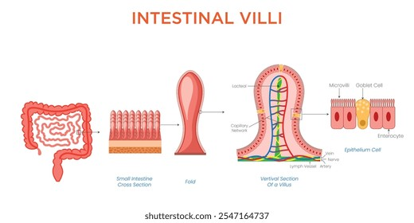
Figura 8: Estructura de las vellosidades intestinales: pliegues, vellos y microvellos que maximizan la absorción. Fuente: Shutterstock.
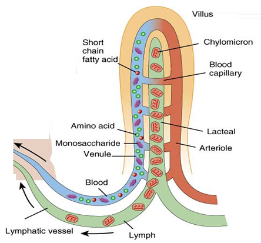
Figura 9: Sección de una vellosidad intestinal mostrando los capilares sanguíneos y los lacteales. Fuente: Biology IGCSE.
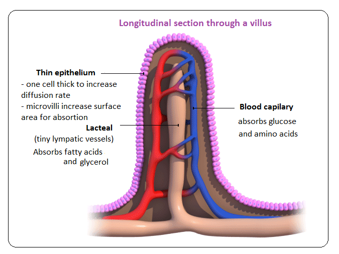
Figura 10: Corte longitudinal de una vellosidad: el epitelio es de una sola célula de grosor para facilitar la difusión. Fuente: Biology IGCSE.
🚽 Formación de Heces (Intestino Grueso)
El intestino grueso absorbe agua y electrolitos del material restante, concentrándolo en heces. La flora bacteriana intestinal (microbiota) fermenta fibras no digeridas y produce vitaminas (K, B12). El recto almacena las heces hasta que se produce la defecación.
🧬 Las Enzimas Digestivas: Los Químicos del Cuerpo
Las enzimas son proteínas especializadas que aceleran las reacciones químicas sin consumirse en el proceso. En la digestión, cada enzima actúa sobre un tipo específico de nutriente. Son como llaves que solo abren una cerradura específica.
| Enzima | Órgano | Sustrato | Producto |
|---|---|---|---|
| Amilasa salival | Boca | Almidón (carbohidratos) | Maltosa |
| Pepsina | Estómago | Proteínas | Péptidos |
| Amilasa pancreática | Intestino delgado | Almidón | Maltosa |
| Lipasa | Páncreas / Intestino | Lípidos (grasas) | Ácidos grasos + Glicerol |
| Proteasas (tripsina, quimotripsina) | Páncreas / Intestino | Proteínas y péptidos | Aminoácidos |
| Maltasa, lactasa, sucrasa | Intestino delgado | Azúcares dobles | Glucosa, galactosa, fructosa |
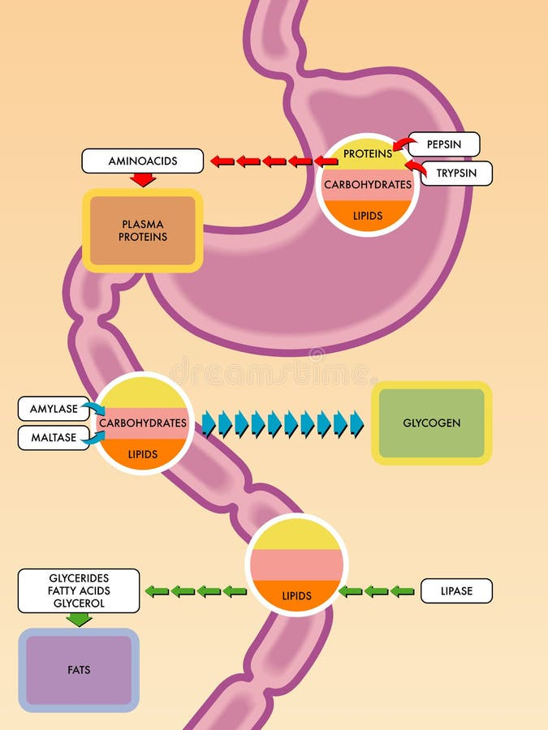
Figura 11: Esquema del proceso digestivo mostrando la acción de enzimas sobre carbohidratos, proteínas y lípidos. Fuente: Dreamstime.
¿Sabías que...?
El cuerpo produce aproximadamente 1.5 litros de saliva al día. La amilasa salival puede seguir actuando en el estómago durante unos 30 minutos antes de que el ácido la desnaturalice. ¡Eso explica por qué el pan sabe dulce si lo masticas mucho tiempo!
🫁 El Hígado: La Fábrica Química del Cuerpo
El hígado es el órgano más grande del sistema digestivo y cumple más de 500 funciones. Es un órgano vital que no puede faltar: sin hígado, la digestión de grasas sería imposible y el cuerpo no podría desintoxicarse.
🔑 Funciones del Hígado en la Digestión
1. Produce bilis: Sustancia verde-amarillenta que emulsifica las grasas (las divide en gotitas más pequeñas para que las lipasas puedan actuar).
2. Almacena nutrientes: Guarda glucosa en forma de glucógeno, vitaminas y minerales.
3. Desintoxicación: Filtra toxinas, alcohol y medicamentos de la sangre.
4. Síntesis de proteínas: Produce albúmina y factores de coagulación.
La bilis no es una enzima —es un surfactante. No descompone químicamente las grasas, sino que las emulsifica (rompe gotas grandes en gotitas pequeñas), aumentando la superficie disponible para que la lipasa actúe. Es como el jabón que usas para lavar platos con grasa: no "come" la grasa, pero la hace soluble en agua.
⚠️ Trastornos del Sistema Digestivo
Conocer los trastornos digestivos más comunes nos ayuda a entender la importancia de una alimentación saludable y a reconocer señales de alerta en nuestro cuerpo.
🔴 Trastornos Comunes
- Gastritis: Inflamación de la mucosa gástrica. Causada por H. pylori, alcohol o antiinflamatorios.
- Úlcera péptica: Lesión en el estómago o duodeno. El 80% está relacionada con H. pylori.
- Reflujo gastroesofágico: El ácido del estómago sube al esófago, causando ardor.
- Síndrome del intestino irritable (SII): Trastorno funcional con dolor abdominal y cambios en el hábito intestinal.
- Enfermedad de Crohn: Inflamación crónica del tracto digestivo. Enfermedad autoinmune.
🟢 Consejos de Salud
- Come despacio: La masticación completa reduce la carga del estómago.
- Hidratación: Bebe al menos 2 litros de agua al día para facilitar el tránsito intestinal.
- Fibra: Consume frutas, verduras y granos integrales para mantener el intestino saludable.
- Evita excesos: El alcohol, grasas saturadas y comida ultra-procesada dañan el sistema digestivo.
- Escucha a tu cuerpo: El dolor abdominal persistente siempre debe consultarse con un médico.
🤯 Datos Curiosos sobre tu Digestión
¿Sabías que...?
Tu estómago produce un nuevo revestimiento de mucosa cada 3-4 días para protegerse de su propio ácido. Si no lo hiciera, el ácido clorhídrico (capaz de disolver metal) te "comería" por dentro.
¿Sabías que...?
El intestino delgado tiene aproximadamente 6 metros de largo, pero su superficie interna (gracias a pliegues, vellosidades y microvellos) equivale al tamaño de una cancha de tenis (~250 m²).
¿Sabías que...?
El cuerpo humano tiene aproximadamente 39 billones de bacterias en el intestino (más que células propias). Estas bacterias pesan alrededor de 1.5 kg y son esenciales para la digestión, inmunidad y incluso el estado de ánimo.
¿Sabías que...?
Los eructos no son aire "de afuera", sino aire que tragaste al comer o beber. El estómago libera este gas para evitar distensión. ¡Así que en realidad estás "devolviendo" aire que ya estaba dentro de ti!
📝 Verifica tu Aprendizaje
Responde estas preguntas para comprobar lo que has aprendido. (Las respuestas se mostrarán al hacer clic)